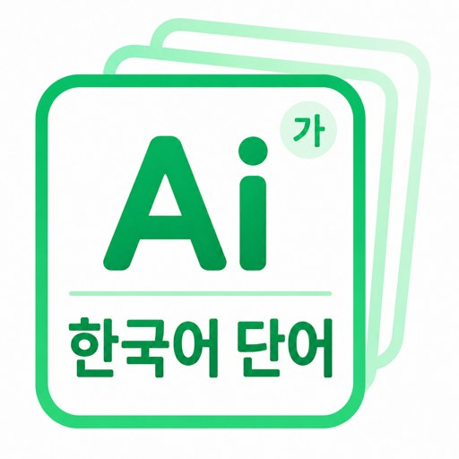
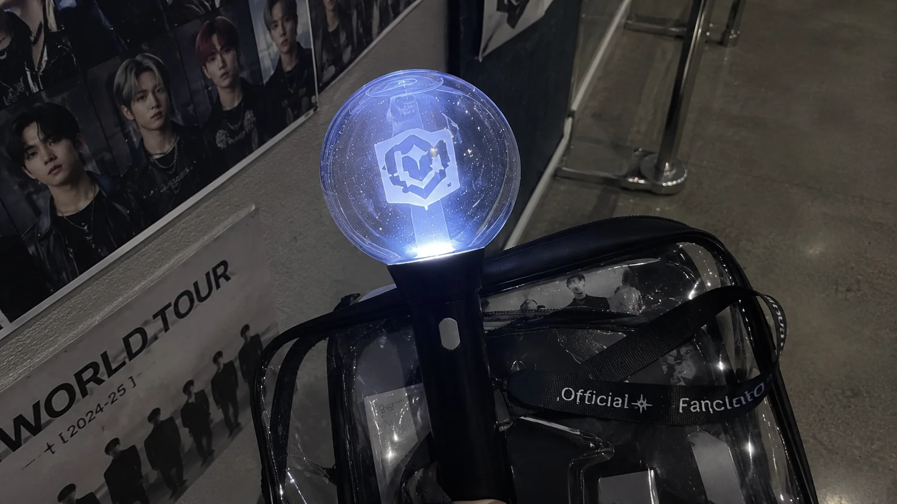

リアルな日常会話から例文化
教科書っぽい不自然な例文ではなく、日常・旅行・推し活でそのまま使える文脈をAIが厳選。訳語だけでなく「実際に口から出る場面」ごと記憶に結びつけます。

AI韓単語App
見て、聞いて、思い出す。全活用形の音声とハングル入門まで備え、「覚えたつもり」で終わらせない。日常・旅行・推し活の約500語を、記憶に残すための韓国語単語アプリです。
買い切り・追加課金なし 全単語にAI画像と全活用形の音声 セール終了で¥1,500に戻ります
iPhone・iPad 配信中Android版 準備中
안녕하세요! 만나서 반가워요.
こんにちは!お会いできて嬉しいです。AI Era
紙の単語帳は、何十年もほとんど姿を変えていません。でも教材そのものをAIが作れるようになった今、「覚え方」は根本から変わります。AI韓単語は、そのAI時代の単語帳です。
例文は教科書調で、本当に使われているのか分からない
紙の時代AIが実際の会話から、そのまま使える例文を作る
AIの時代イラストは無いか、あっても数ページに1枚だけ
紙の時代全単語にAIが作ったイメージ。場面ごと記憶に残る
AIの時代発音は、自分でカタカナを想像するしかない
紙の時代全単語・全活用形にAI音声。耳から正しく覚える
AIの時代全ページ同じ密度で、あとはひたすら繰り返すだけ
紙の時代忘却曲線に沿って、忘れかけの単語だけを教えてくれる
AIの時代1冊終えるたびに、また新しい本を買い足すしかない
紙の時代必要十分な約500語を、AIが1つのアプリに凝縮
AIの時代
単語帳の作り方は、AIで変わりました。
ここから、その中身をお見せします。
AI
紙の単語帳は、単語と訳だけで止まりがち。AI韓単語は約500語すべてにAI画像、AI音声、例文、語源、関連語、そして全活用形の音声まで添えました。視覚と聴覚を同時に動かし、思い出すための手がかりを一語ずつ増やします。
「美味しい店」の場面ごと、イメージで記憶に残る。
教科書っぽい不自然な例文ではなく、日常・旅行・推し活でそのまま使える文脈をAIが厳選。訳語だけでなく「実際に口から出る場面」ごと記憶に結びつけます。
全単語にAI画像があるから、意味だけでなく「どんな場面で使う単語か」まで視覚に残ります。맛집なら、期待に胸をふくらませて店に入る場面を、1枚の絵から思い出せます。
たとえば 안녕하세요 は「안녕 = [安寧]」という語源から、안녕（반말）や 안녕하십니까（丁重）まで活用がつながります。例文・語源・類義語・活用を一緒に見るので、訳を1つ覚えるだけでなく、使える場面ごと頭に入ります。
Demo
単語を見てタップ。裏面で意味・AI画像・例文・語源を確認し、「覚えた／完全定着」に仕分ける。視覚と聴覚をフル活用する学習の流れを、購入前にそのまま試せます。
画面内のスマホは、そのまま操作できます。まずは体験してみよう。
この体験そのままに約500語・AI画像・全活用形の音声つき
Uses
旅行、推し活、検定、ドラマ。それぞれの学習シーンをAI韓単語が支えます。
韓国旅行の前に、空港やカフェで使う「注文」「道案内」まわりの単語だけ復習。画像と例文で場面ごと思い出せるので、現地で韓国語が口から出る感覚がありました。
30代・韓国旅行が好きな会社員TOPIK用に単語帳を買い足すか迷っていたけど、セール900円なら、まず手元の一冊として十分。覚えた回数が残るから、前より勉強量を実感できる感じがします。
大学生・TOPIK学習中発音、画像、例文が同じ単語にまとまっているので、丸暗記より会話の場面で思い出しやすいです。推しの配信で「あ、この表現知ってる」と言える瞬間が増えました。
20代・K-POPが好きな社会人好きな韓ドラを字幕なしで聞き取りたくて。寝る前に「覚えてない」単語だけテストできるので、全部を最初から見直すより、忘れそうな単語に絞れて、短い時間でも前に進んだ満足感があります。
20代・韓ドラにハマった会社員Value
数千語を積んで挫折するより、現地で本当に使う言葉だけに絞る。AI韓単語は日常・旅行・推し活で回る約500語を10レベルに厳選したので、
これだけで韓国旅行も、日常のひとことも、推し活も過不足なくこなせます。
「見たことある」で終わらせず、単語ごとに覚えた回数を残します。
努力が数字で残るから、昨日より進んだ感覚がちゃんと返ってきます。
안녕하세요こんにちは 02
맛집美味しい店 04
최애最推し 08
回答するたびに、単語ごとの覚えた回数が増える覚えた単語も放っておくと薄れます。記憶度が下がった単語を見つけられるので、やみくもに全部見直す時間を減らせます。
まだ覚えてない、覚えた、完全定着。1枚ずつスワイプで正直に仕分けるだけで、復習すべき単語と卒業していい単語が自然に分かれます。通勤中や寝る前の数分が、そのまま復習時間に。
覚えた数がホーム画面にあると、アプリを開く前から積み上げが見えます。数字が増えるほど、今日も少しだけ進めたくなる設計です。
Memory
記憶は、何度も見るだけでは残りにくい。AI韓単語は、AI画像・AI音声で5感に直接訴えかけ、繰り返しのテストで確実に記憶します。
答えを見る前に一度思い出すことで、記憶を取り出す回路を使います。AI画像で記憶にも残りやすくなります。
忘却曲線に沿って記憶度を見える化。全部をやみくもに復習するのではなく、忘れそうな単語だけ集中的に復習できます。
AI画像で目から、AI発音とAI例文音声で耳からも入力。視覚と聴覚の入口を増やすことで、会話中の記憶トリガーを増やします。
回答直後に覚えた回数と記憶度が変わります。脳に「進んだ」感覚が返るので、次の1枚へ進む心理的な負担を下げます。
Hangul
文字の仕組みから、母音・子音・パッチム、連音化・鼻音化・濃音化といった発音の変化まで。単語学習でつまずかないよう、音声つきのハングル入門でゼロからぜんぶまとめて教えます。
ハングル入門は全8レッスン。各レッスンの例は音声つきで、タップして耳から確認しながら、ゼロから無理なく読めるようになります。
Emotion
カードがめくれる、飛ぶ、記憶度が伸びる、ハートが弾ける。毎日触るアプリだから、反応の心地よさも学習を継続する理由になります。
右で「覚えた」、上で「完全定着」、左で「まだ覚えてない」。スワイプするだけで、短時間でも復習すべき単語が整理されます。
発音を聞く、例文を確認する、お気に入りにする。単語詳細は「読むページ」ではなく、記憶の入口を増やす場所です。
ウンウォンボン

覚えた回数、記憶度、Widgetの合計数。学習の成果が画面上で更新されると、もう1セットだけ進めたくなります。
Price
本を何冊も積むための量ではなく、韓国旅行も日常も推し活もこれ1本で回せる必要十分な約500語だけに絞ったから、この価格。
通常1500円の買い切りを、セール時限定で40%OFFの900円に。
セール終了後は通常価格¥1,500に戻ります
これだけで、韓国旅行も推し活も日常会話も回せる分量に絞りました。
FAQ
月額ではなく、通常1500円、セール時限定900円の買い切り。毎月の固定費を増やさず、長く使える韓国語単語帳を目指しています。
収録約500語すべてに、AIイメージ画像、AI発音音声、AI例文音声、例文、語源、そして全活用形の音声を用意しています。
日常・旅行・推し活で本当に使う約500語を、基礎から10レベルに分けて収録。あいさつから旅行会話、推し活フレーズまで、場面ごとに幅広く学べます。
単語数だけでなく、覚えた回数、記憶度、完全定着までまとめて管理できます。覚えたつもりで終わらせない設計です。
覚えたは記憶度100%から始まり、時間とともに少しずつ減衰します。完全定着は長期記憶扱いで減衰対象から外し、復習時間をまだ不安な単語へ回せます。
使えます。ハングル入門で、文字の組み立て、母音・子音・パッチム、連音化や濃音化といった発音の変化までを、音声つきでざっくり掴んでから単語学習に入れます。
スワイプテストで、覚えた・覚えていない・完全定着をすぐに仕分けできます。通勤中や寝る前の数分でも進めやすいです。
覚えた単語数と完全定着した単語数をホーム画面で確認できます。アプリを開く前から、学習の積み上げが見えるようにします。そして復習テストもWidgetからすぐ始められます。
現在はiPhone・iPadで配信中です。Android版はGoogle Playでの公開に向けて準備を進めています。学習データは端末内に保存され、JSONバックアップで書き出し・読み込みができます。
Next
日常・旅行・推し活の約500語、AIが作ったイメージ画像、音声、例文、全活用形の音声、忘却曲線に沿った記憶度測定、Widgetまで。買い切りの韓国語単語帳として、毎日触るほど価値が増えます。